Historia, agua y memoria
Para entender la Fundación Fayón Cultural y Patrimonial hay que conocer tres momentos que marcaron para siempre este rincón del Ebro: un pueblo viejo con siglos de historia, una inundación que lo engulló todo y una guerra que dejó sus huellas en el territorio.
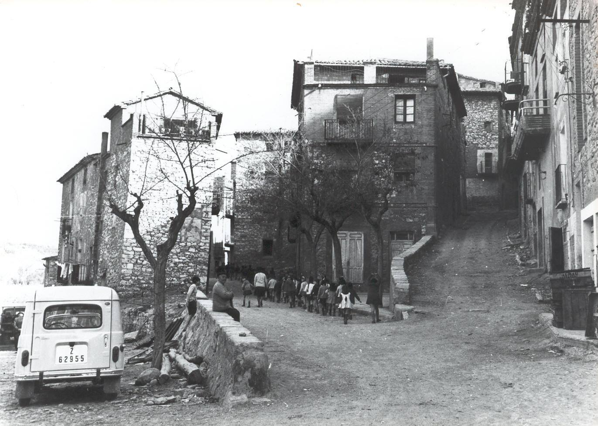
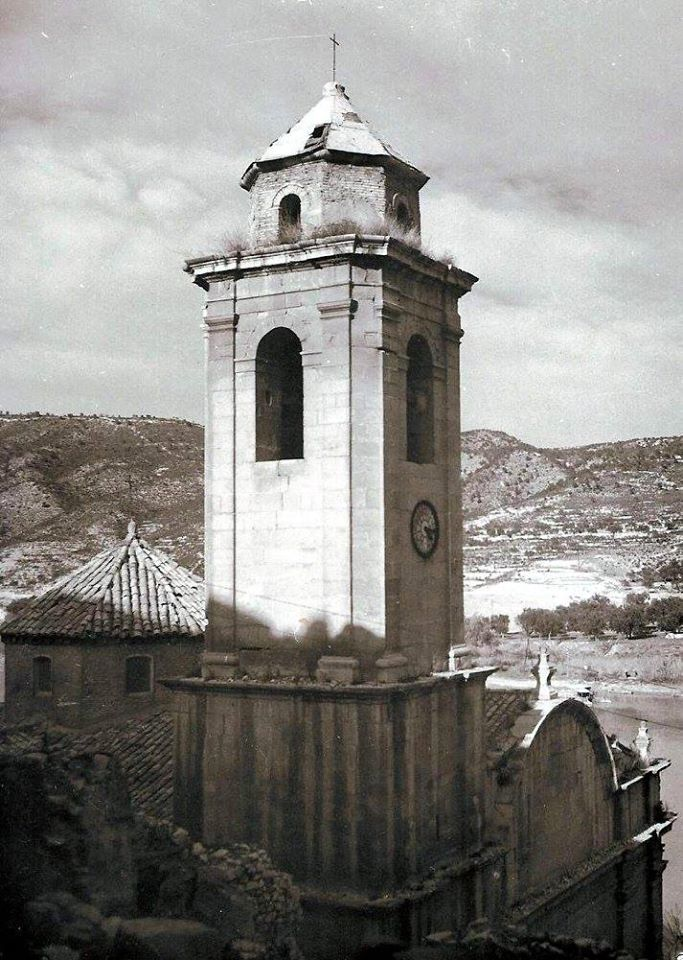
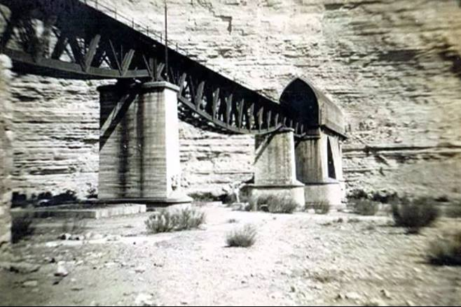
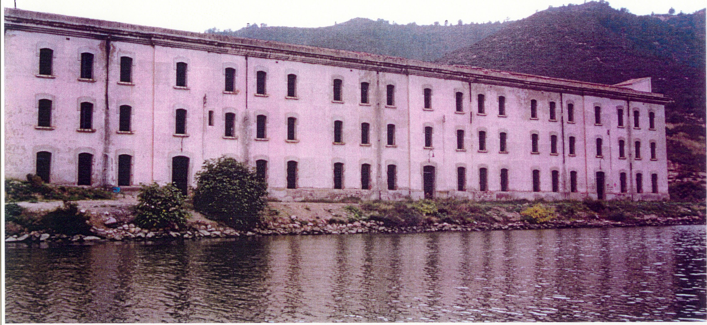
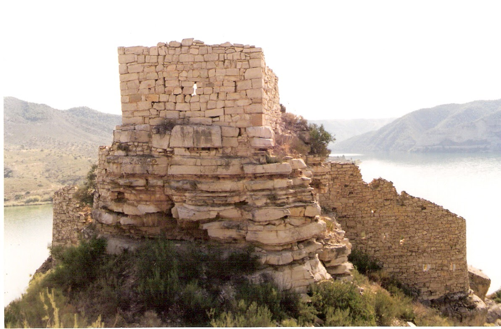
1 / 5El Poble Vell
El antiguo Fayón albergaba un extraordinario conjunto patrimonial: la iglesia de San Juan Evangelista —con elementos renacentistas y barrocos—, el Castillo de Badón, la Ermita del Pilar, el cementerio, las viviendas de RENFE y el túnel del ferrocarril. Un territorio en la confluencia de Zaragoza, Tarragona y Lérida, donde el Matarraña tributa al Ebro.
Ver el patrimonio →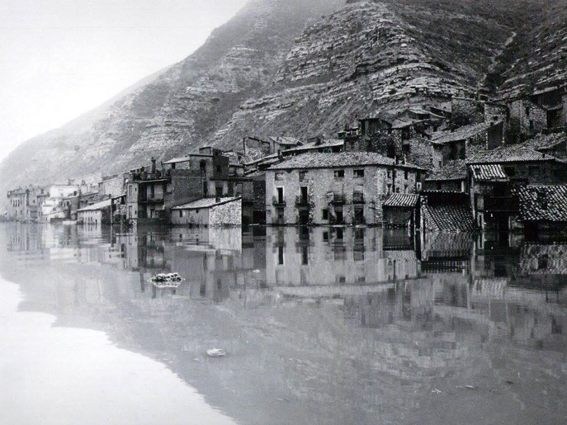
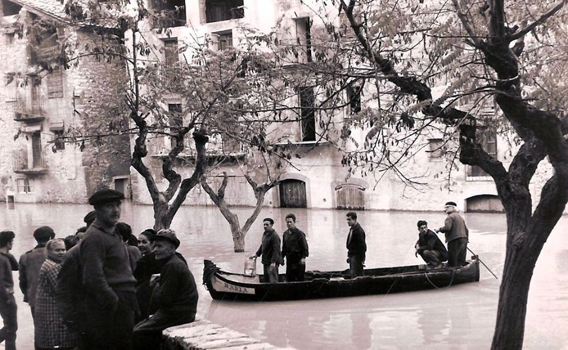
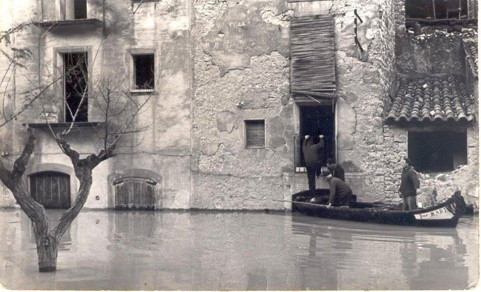
1 / 3La inundación de 1967
En noviembre de 1967, las aguas del embalse de Ribarroja anegaron el pueblo viejo para siempre. La iglesia, la estación de ferrocarril y centenares de bienes patrimoniales quedaron sumergidos. Solo la torre de San Juan Evangelista emergía entre las aguas como símbolo imborrable de lo que fue. Vecinos arriesgaron su vida para salvar las imágenes de San Sebastián, Santa Quiteria, San Miguel y San Juan Evangelista por el rosetón superior.
El conjunto patrimonial →_Cova de l'Oriola.jpg)
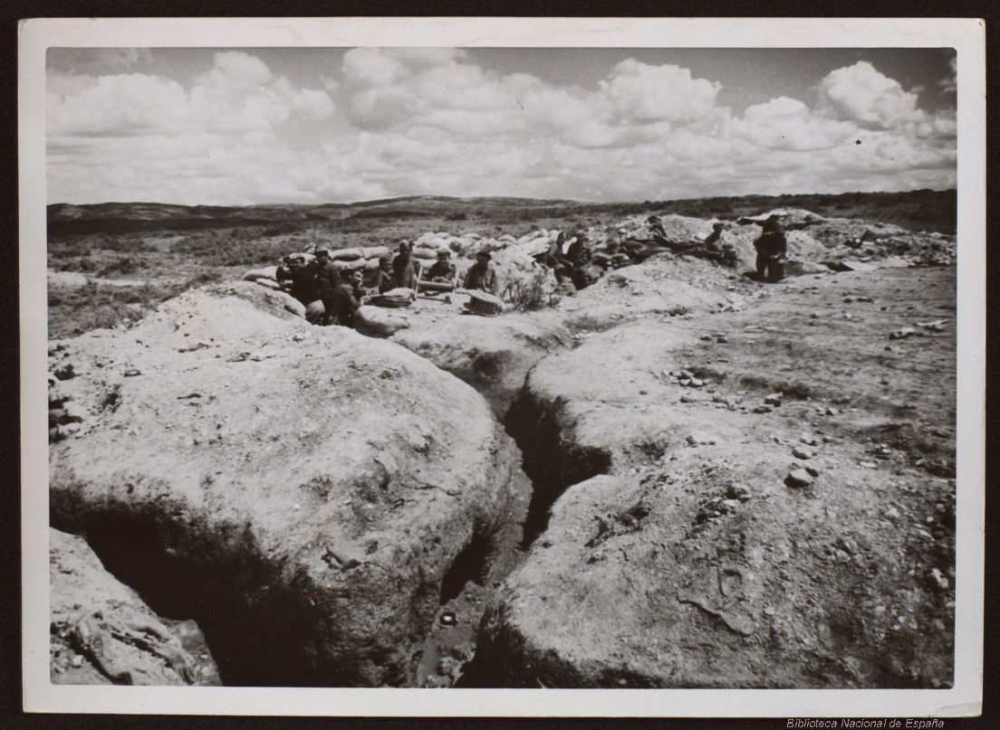

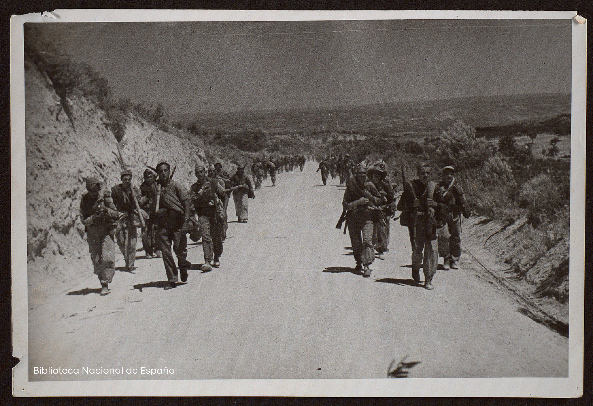
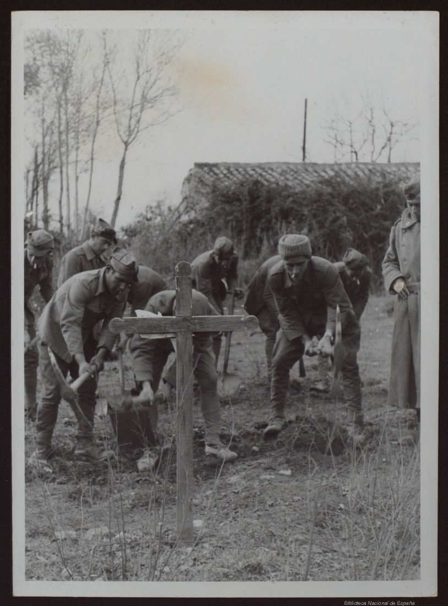
1 / 5La Batalla del Ebro
Entre julio y noviembre de 1938, el frente del Ebro convirtió estas tierras en uno de los escenarios más cruentos de la Guerra Civil española. Más de 115 días de combates, más de 100.000 víctimas. Las trincheras de la Posición Nº36, los pozos de tirador y los refugios de oficiales siguen presentes en el territorio como testimonio de una herida que no debe olvidarse.
Memoria Democrática →